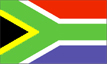

{kind=link}


![[Country map of South Africa]](../maps/sf-map.jpg)
| South Africa |  |
|
| | |
| Introduction |
Background: After the British seized the Cape of Good Hope area in 1806, many of the Dutch settlers (the Boers) trekked north to found their own republics. The discovery of diamonds (1867) and gold (1886) spurred wealth and immigration and intensified the subjugation of the native inhabitants. The Boers resisted British encroachments, but were defeated in the Boer War (1899-1902). The resulting Union of South Africa operated under a policy of apartheid - the separate development of the races. The 1990s brought an end to apartheid politically and ushered in black majority rule.
| Geography |
Location: Southern Africa, at the southern tip of the continent of Africa
Geographic coordinates: 29 00 S, 24 00 E
Map references: Africa
Area:
total:
1,219,912 sq km
land:
1,219,912 sq km
water:
0 sq km
note:
includes Prince Edward Islands (Marion Island and Prince Edward Island)
Area - comparative: slightly less than twice the size of Texas
Land boundaries:
total:
4,750 km
border countries:
Botswana 1,840 km, Lesotho 909 km, Mozambique 491 km, Namibia 855 km, Swaziland 430 km, Zimbabwe 225 km
Coastline: 2,798 km
Maritime claims:
contiguous zone:
24 nm
continental shelf:
200-m depth or to the depth of exploitation
exclusive economic zone:
200 nm
territorial sea:
12 nm
Climate: mostly semiarid; subtropical along east coast; sunny days, cool nights
Terrain: vast interior plateau rimmed by rugged hills and narrow coastal plain
Elevation extremes:
lowest point:
Atlantic Ocean 0 m
highest point:
Njesuthi 3,408 m
Natural resources: gold, chromium, antimony, coal, iron ore, manganese, nickel, phosphates, tin, uranium, gem diamonds, platinum, copper, vanadium, salt, natural gas
Land use:
arable land:
10%
permanent crops:
1%
permanent pastures:
67%
forests and woodland:
7%
other:
15% (1993 est.)
Irrigated land: 12,700 sq km (1993 est.)
Natural hazards: prolonged droughts
Environment - current issues: lack of important arterial rivers or lakes requires extensive water conservation and control measures; growth in water usage threatens to outpace supply; pollution of rivers from agricultural runoff and urban discharge; air pollution resulting in acid rain; soil erosion; desertification
Environment - international agreements:
party to:
Antarctic-Environmental Protocol, Antarctic Treaty, Biodiversity, Climate Change, Desertification, Endangered Species, Hazardous Wastes, Law of the Sea, Marine Dumping, Marine Life Conservation, Nuclear Test Ban, Ozone Layer Protection, Ship Pollution, Wetlands, Whaling
signed, but not ratified:
none of the selected agreements
Geography - note: South Africa completely surrounds Lesotho and almost completely surrounds Swaziland
| People |
Population:
43,421,021
note:
South Africa took a census October 1996 which showed a population of 40,583,611 (after an official adjustment for a 6.8% underenumeration based on a post-enumeration survey); estimates for this country explicitly take into account the effects of excess mortality due to AIDS; this can result in lower life expectancy, higher infant mortality and death rates, lower population and growth rates, and changes in the distribution of population by age and sex than would otherwise be expected (July 2000 est.)
Age structure:
0-14 years:
32.46% (male 7,094,756; female 6,999,009)
15-64 years:
62.76% (male 13,111,457; female 14,139,372)
65 years and over:
4.78% (male 782,397; female 1,294,030) (2000 est.)
Population growth rate: 0.5% (2000 est.)
Birth rate: 24.56 births/1,000 population (2000 est.)
Death rate: 14.69 deaths/1,000 population (2000 est.)
Net migration rate: -1.9 migrant(s)/1,000 population (2000 est.)
Sex ratio:
at birth:
1.02 male(s)/female
under 15 years:
1.01 male(s)/female
15-64 years:
0.93 male(s)/female
65 years and over:
0.61 male(s)/female
total population:
0.94 male(s)/female (2000 est.)
Infant mortality rate: 58.88 deaths/1,000 live births (2000 est.)
Life expectancy at birth:
total population:
51.1 years
male:
50.41 years
female:
51.81 years (2000 est.)
Total fertility rate: 2.47 children born/woman (2000 est.)
Nationality:
noun:
South African(s)
adjective:
South African
Ethnic groups: black 75.2%, white 13.6%, Colored 8.6%, Indian 2.6%
Religions: Christian 68% (includes most whites and Coloreds, about 60% of blacks and about 40% of Indians), Muslim 2%, Hindu 1.5% (60% of Indians), indigenous beliefs and animist 28.5%
Languages: 11 official languages, including Afrikaans, English, Ndebele, Pedi, Sotho, Swazi, Tsonga, Tswana, Venda, Xhosa, Zulu
Literacy:
definition:
age 15 and over can read and write
total population:
81.8%
male:
81.9%
female:
81.7% (1995 est.)
| Government |
Country name:
conventional long form:
Republic of South Africa
conventional short form:
South Africa
abbreviation:
RSA
Data code: SF
Government type: republic
Capital: Pretoria; note - Cape Town is the legislative center and Bloemfontein the judicial center
Administrative divisions: 9 provinces; Eastern Cape, Free State, Gauteng, KwaZulu-Natal, Mpumalanga, North-West, Northern Cape, Northern Province, Western Cape
Independence: 31 May 1910 (from UK)
National holiday: Freedom Day, 27 April (1994)
Constitution: 10 December 1996; this new constitution was certified by the Constitutional Court on 4 December 1996, was signed by then President MANDELA on 10 December 1996, and entered into effect on 3 February 1997; it is being implemented in phases
Legal system: based on Roman-Dutch law and English common law; accepts compulsory ICJ jurisdiction, with reservations
Suffrage: 18 years of age; universal
Executive branch:
chief of state:
President Thabo MBEKI (since 16 June 1999); Executive Deputy President Jacob ZUMA (since 17 June 1999); note - the president is both the chief of state and head of government
head of government:
President Thabo MBEKI (since 16 June 1999); Executive Deputy President Jacob ZUMA (since 17 June 1999); note - the president is both the chief of state and head of government
cabinet:
Cabinet appointed by the president
elections:
president elected by the National Assembly for a five-year term; election last held 2 June 1999 (next scheduled for sometime between May and July 2004)
election results:
Thabo MBEKI elected president; percent of National Assembly vote - 100% (by acclamation)
note:
ANC-IFP governing coalition
Legislative branch:
bicameral parliament consisting of the National Assembly (400 seats; members are elected by popular vote under a system of proportional representation to serve five-year terms) and the National Council of Provinces (90 seats, 10 members elected by each of the nine provincial legislatures for five-year terms; has special powers to protect regional interests, including the safeguarding of cultural and linguistic traditions among ethnic minorities); note - following the implementation of the new constitution on 3 February 1997 the former Senate was disbanded and replaced by the National Council of Provinces with essentially no change in membership and party affiliations, although the new institution's responsibilities have been changed somewhat by the new constitution
elections:
National Assembly and National Council of Provinces - last held 2 June 1999 (next to be held NA 2004)
election results:
National Assembly - percent of vote by party - ANC 66.4%, DP 9.6%, IFP 8.6%, NP 6.9%, UDM 3.4, FF 0.8%, other 4.3%; seats by party - ANC 266, DP 38, IFP 34, NP 28, UDM 14, FF 3, other 17; National Council of Provinces - percent of vote by party - NA; seats by party - ANC 61, NP 17, FF 4, IFP 5, DP 3
Judicial branch: Constitutional Court; Supreme Court of Appeals; High Courts; Magistrate Courts
Political parties and leaders: African Christian Democratic Party or ACDP [Kenneth MESHOE, president]; African National Congress or ANC [Thabo MBEKI, president]; Democratic Party or DP [Tony LEON, president]; Freedom Front or FF [Constand VILJOEN, president]; Inkatha Freedom Party or IFP [Mangosuthu BUTHELEZI, president]; National Party (now the New National Party) or NP [Marthinus VAN SCHALKWYK, executive director]; Pan-Africanist Congress or PAC [Stanley MOGOBA, president]; United Democratic Movement or UDM [Bantu HOLOMISA]
Political pressure groups and leaders: Congress of South African Trade Unions or COSATU [Zwelinzima VAVI, general secretary]; South African Communist Party or SACP [Blade NZIMANDE, general secretary]; South African National Civics Organization or SANCO [Mlungisi HLONGWANE, national president]; note - COSATU and SACP are in a formal alliance with the ANC
International organization participation: ACP, AfDB, BIS, C, CCC, ECA, FAO, G-77, IAEA, IBRD, ICAO, ICC, ICFTU, ICRM, IDA, IFAD, IFC, IFRCS, IHO, ILO, IMF, IMO, Inmarsat, Intelsat, Interpol, IOC, IOM, ISO, ITU, MONUC, NAM, NSG, OAU, OPCW, PCA, SACU, SADC, UN, UNCTAD, UNESCO, UNHCR, UNITAR, UPU, WFTU, WHO, WIPO, WMO, WToO, WTrO, ZC
Diplomatic representation in the US:
chief of mission:
Ambassador Makate Sheila SISULU
chancery:
3051 Massachusetts Avenue NW, Washington, DC 20008
telephone:
[1] (202) 232-4400
FAX:
[1] (202) 265-1607
consulate(s) general:
Chicago, Los Angeles, and New York
Diplomatic representation from the US:
chief of mission:
Ambassador Delano E. LEWIS
embassy:
877 Pretorius Street, Arcadia 0083
mailing address:
P. O. Box 9536, Pretoria 0001
telephone:
[27] (12) 342-1048
FAX:
[27] (12) 342-2244
consulate(s) general:
Cape Town, Durban, Johannesburg
Flag description:
two equal width horizontal bands of red (top) and blue separated by a central green band which splits into a horizontal Y, the arms of which end at the corners of the hoist side; the Y embraces a black isosceles triangle from which the arms are separated by narrow yellow bands; the red and blue bands are separated from the green band and its arms by narrow white stripes
note:
prior to 26 April 1994, the flag was actually four flags in one - three miniature flags reproduced in the center of the white band of the former flag of the Netherlands, which has three equal horizontal bands of orange (top), white, and blue; the miniature flags are a vertically hanging flag of the old Orange Free State with a horizontal flag of the UK adjoining on the hoist side and a horizontal flag of the old Transvaal Republic adjoining on the other side
| Economy |
Economy - overview: South Africa is a middle-income, developing country with an abundant supply of resources, well-developed financial, legal, communications, energy, and transport sectors, a stock exchange that ranks among the 10 largest in the world, and a modern infrastructure supporting an efficient distribution of goods to major urban centers throughout the region. However, growth has not been strong enough to cut into the 30% unemployment, and daunting economic problems remain from the apartheid era, especially the problems of poverty and lack of economic empowerment among the disadvantaged groups. Other problems are crime, corruption, and HIV/AIDS. At the start of 2000, President MBEKI vowed to promote economic growth and foreign investment by relaxing restrictive labor laws, stepping up the pace of privatization, and cutting unneeded governmental spending. His policies face strong opposition from organized labor.
GDP: purchasing power parity - $296.1 billion (1999 est.)
GDP - real growth rate: 0.6% (1999 est.)
GDP - per capita: purchasing power parity - $6,900 (1999 est.)
GDP - composition by sector:
agriculture:
5%
industry:
35%
services:
60% (1999 est.)
Population below poverty line: NA%
Household income or consumption by percentage share:
lowest 10%:
1.4%
highest 10%:
47.3% (1993)
Inflation rate (consumer prices): 5.5% (1999 est.)
Labor force: 15 million economically active (1997)
Labor force - by occupation: agriculture 30%, industry 25%, services 45% (1999 est.)
Unemployment rate: 30% (1999 est.)
Budget:
revenues:
$30.5 billion
expenditures:
$38 billion, including capital expenditures of $2.6 billion (FY94/95 est.)
Industries: mining (world's largest producer of platinum, gold, chromium), automobile assembly, metalworking, machinery, textile, iron and steel, chemicals, fertilizer, foodstuffs
Industrial production growth rate: -5% (1998 est.)
Electricity - production: 192.015 billion kWh (1998)
Electricity - production by source:
fossil fuel:
92.09%
hydro:
0.83%
nuclear:
7.08%
other:
0% (1998)
Electricity - consumption: 174.486 billion kWh (1998)
Electricity - exports: 4.093 billion kWh (1998)
Electricity - imports: 5 million kWh (1998)
Agriculture - products: corn, wheat, sugarcane, fruits, vegetables; beef, poultry, mutton, wool, dairy products
Exports: $28 billion (f.o.b., 1999 est.)
Exports - commodities: gold, diamonds, other metals and minerals, machinery and equipment
Exports - partners: UK, Italy, Japan, US, Germany (1997)
Imports: $26 billion (f.o.b., 1999 est.)
Imports - commodities: machinery, foodstuffs and equipment, chemicals, petroleum products, scientific instruments
Imports - partners: Germany, US, UK, Japan
Debt - external: $25.7 billion (1998 est.)
Economic aid - recipient: $676.3 million
Currency: 1 rand (R) = 100 cents
Exchange rates: rand (R) per US$1 - 6.12439 (January 2000), 6.10948 (1999), 5.52828 (1998), 4.60796 (1997), 4.29935 (1996), 3.62709 (1995)
Fiscal year: 1 April - 31 March
| Communications |
Telephones - main lines in use: 5.075 million (1999)
Telephones - mobile cellular: over 2,000,000 (1999)
Telephone system:
the system is the best developed and most modern in Africa
domestic:
consists of carrier-equipped open-wire lines, coaxial cables, microwave radio relay links, fiber-optic cable, radiotelephone communication stations, and wireless local loops; key centers are Bloemfontein, Cape Town, Durban, Johannesburg, Port Elizabeth, and Pretoria
international:
2 submarine cables; satellite earth stations - 3 Intelsat (1 Indian Ocean and 2 Atlantic Ocean)
Radio broadcast stations: AM 14, FM 347 (plus 243 repeaters), shortwave 1 (1998)
Radios: 13.75 million (1997)
Television broadcast stations: 556 (plus 144 network repeaters) (1997)
Televisions: 5.2 million (1997)
Internet Service Providers (ISPs): 58 (1999)
| Transportation |
Railways:
total:
21,431 km
narrow gauge:
20,995 km 1.067-m gauge (9,087 km electrified); 436 km 0.610-m gauge (1995)
Highways:
total:
534,131 km
paved:
63,027 km (including 2,032 km of expressways)
unpaved:
471,104 km (1998 est.)
Pipelines: crude oil 931 km; petroleum products 1,748 km; natural gas 322 km
Ports and harbors: Cape Town, Durban, East London, Mosselbaai, Port Elizabeth, Richards Bay, Saldanha
Merchant marine:
total:
9 ships (1,000 GRT or over) totaling 274,797 GRT/270,837 DWT
ships by type:
container 6, petroleum tanker 2, roll-on/roll-off 1 (1999 est.)
Airports: 744 (1999 est.)
Airports - with paved runways:
total:
143
over 3,047 m:
9
2,438 to 3,047 m:
4
1,524 to 2,437 m:
46
914 to 1,523 m:
73
under 914 m:
11 (1999 est.)
Airports - with unpaved runways:
total:
601
1,524 to 2,437 m:
33
914 to 1,523 m:
303
under 914 m:
265 (1999 est.)
| Military |
Military branches: South African National Defense Force or SANDF (includes Army, Navy, Air Force, and Medical Services), South African Police Service or SAPS
Military manpower - military age: 18 years of age
Military manpower - availability:
males age 15-49:
11,345,031 (2000 est.)
Military manpower - fit for military service:
males age 15-49:
6,901,252 (2000 est.)
Military manpower - reaching military age annually:
males:
460,917 (2000 est.)
Military expenditures - dollar figure: $2 billion (FY99/00)
Military expenditures - percent of GDP: 1.5% (FY99/00)
Military - note: the National Defense Force continues to integrate former military, black homelands forces, and ex-opposition forces
| Transnational Issues |
Disputes - international: Swaziland has asked South Africa to open negotiations on reincorporating some nearby South African territories that are populated by ethnic Swazis or that were long ago part of the Swazi Kingdom
Illicit drugs: transshipment center for heroin and cocaine; cocaine consumption on the rise; world's largest market for illicit methaqualone, usually imported illegally from India through various east African countries; illicit cultivation of marijuana